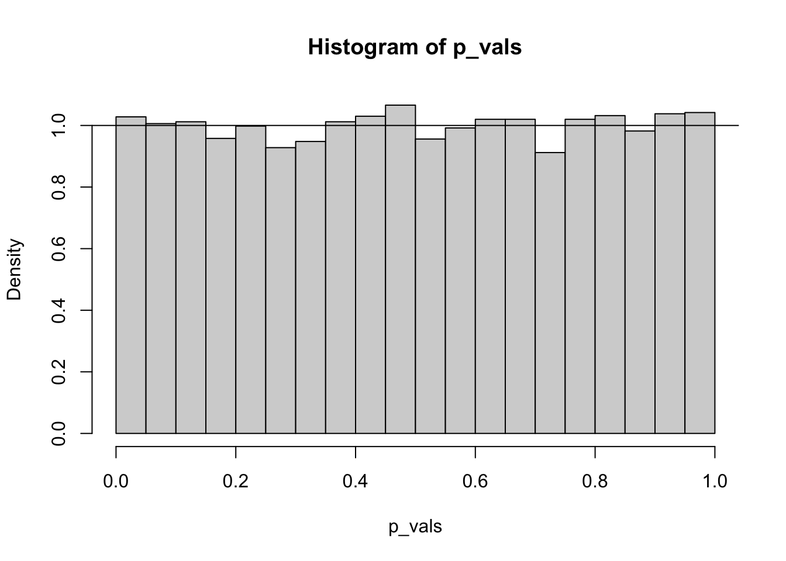
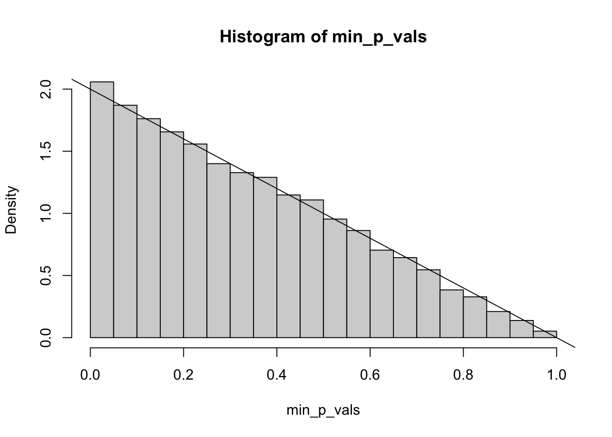
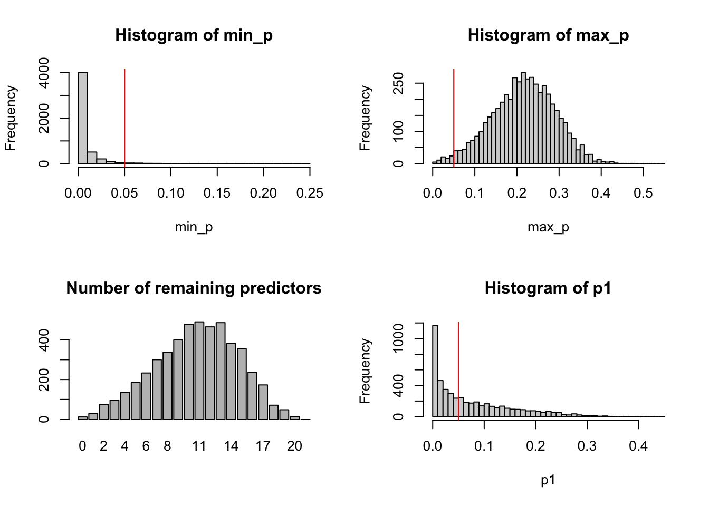

Backwards and forward model selection are sequential model selection techniques where predictors are sequentially removed or added until all predictors are significant and no other predictors would be significant if they were added.
Distribution of a p-value
Under the null hypothesis, a p-value is uniform. That is, all p-values are equally likely. This is not a coincidence, this is how p-values are defined. The p-value is the area of the sampling distribution further away from the hypothesized mean than the observed data. The area “further away” means we are looking at the CDF of a distribution, and the CDF of any continuous distribution follows a normal distribution.
To demonstrate, let’s simulate!
library(magrittr) # pipes and `extract` functionlibrary(dplyr)library(ggplot2)x <-runif(30, 0, 10)y <-rnorm(30, 0, 1) # uncorrelated with x - null is true.summary(lm(y ~ x))$coef[2, 4] # the p-value for x
[1] 0.93823
N <-10000# Increase for better resultsp_vals <-double(N)for (i in1:N){ y <-rnorm(30, 0, 1) p_vals[i] <-summary(lm(y ~ x))$coef[2, 4]}
hist(p_vals, freq =FALSE)abline(h =1) # theoretical pdf

M Backwards Selection
We’ve established that P(p.value < 0.05) = 0.05, i.e. that p-values follow a uniform distribution. What about the probability of at least one significant value out of 2?
\[\begin{align*}
F(z) &= P(\text{at least one of }X_1\text{ and }X_2\text{ is less than }z)\\
&= 1 - P(\text{both }X_1\text{ and }X_2\text{ are greater than }z)\\
&= 1 - P(X_1 > z, X_2 > z)\\
&= 1 - P(X_1 > z)(X_2 > z)\\
&= 1 - (1-z)^2
\end{align*}\]
So the pdf is the derivative of this, which is \(f(z) = 2 - 2z\).
N <-10000min_p_vals <-double(N)for (i in1:N){ yxx <-data.frame(x1 =runif(30), x2 =runif(30), y =rnorm(30)) p_vals <-summary(lm(y ~ ., data = yxx))$coef[-1, 4] max_p <-which.max(p_vals) # to be removed min_p_vals[i] <-summary(lm(y ~ ., data = yxx[, -max_p]))$coef[2, 4]}
hist(min_p_vals, freq =FALSE)abline(a =2, b =-2) # Theoretical pdf

So when we remove the largest p-value, we end up with a much larger chance that the remaining p-value is below 0.05 - even though the null hypothesis is true. This bears repeating - when we make a change in the model based on the p-value, the rest of the p-values must be interpreted carefully. They are no longer the probability of data at least as extreme under the null hypothesis - they have been artificially shrunk.
What about AIC?
In R, step() performs stepwise model selection (by default, backwards) until the AIC no longer decreases. I’m going to simulate under the null hypothesis: none of the predictors are actually related to the response.
N <-1000# This will take a whilemin_p <-double(N)max_p <-double(N)p1 <-double(N)num_signif <-double(N)t0 <-Sys.time()for (i in1:N){# First columns is y, the rest are x1...x20 bigdf <-matrix(data =rnorm(30*11), nrow =30, ncol =11)colnames(bigdf) <-c("y", paste("x", 1:10)) bigdf <-as.data.frame(bigdf)# Regress y against everything newmod <-step(lm(y ~ ., data = bigdf), trace =0)# Extract the p-values mycoefs <-summary(newmod)$coef[-1, 4] num_signif[i] <-length(mycoefs) min_p[i] <-min(mycoefs) max_p[i] <-max(mycoefs) p1[i] <- mycoefs[1] # should be representative of p-values}Sys.time() - t0
Time difference of 19.71106 secs
par(mfrow =c(2, 2))hist(min_p, breaks =seq(0, 0.25, 0.01))abline(v =0.05, col ="red")hist(max_p, breaks =seq(0, 0.55, 0.01))abline(v =0.05, col ="red")barplot(table(num_signif), main ="Number of remaining predictors")hist(p1, breaks =seq(0, 0.45, 0.01))abline(v =0.05, col ="red")

In the plots above, keep in mind that none of the predictors were related to the response. We see that the p-values are far from being uniform, and sometimes we took all of the predictors.
The bottom right plot shows the distribution of the p-value for the first predictor. There’s nothing special about this predictor, so this plot is representative of the distribution of p-values resulting from stepwise AIC model selection with 20 predictors, none of which are actually related to the response.
N So what’s the right way?
Best: Domain knowledge. Start with the model that you think will be the final model, then experiment with adding/removing predictors. For instance, if your model has weather predictors, start with the ones that are most meaningful (e.g. daily high temperature), then look at what changes when you switch it out for something else (e.g., daily average or low temperature). Check the residual diagnostic plots each time - ignore the p-values until the very end!